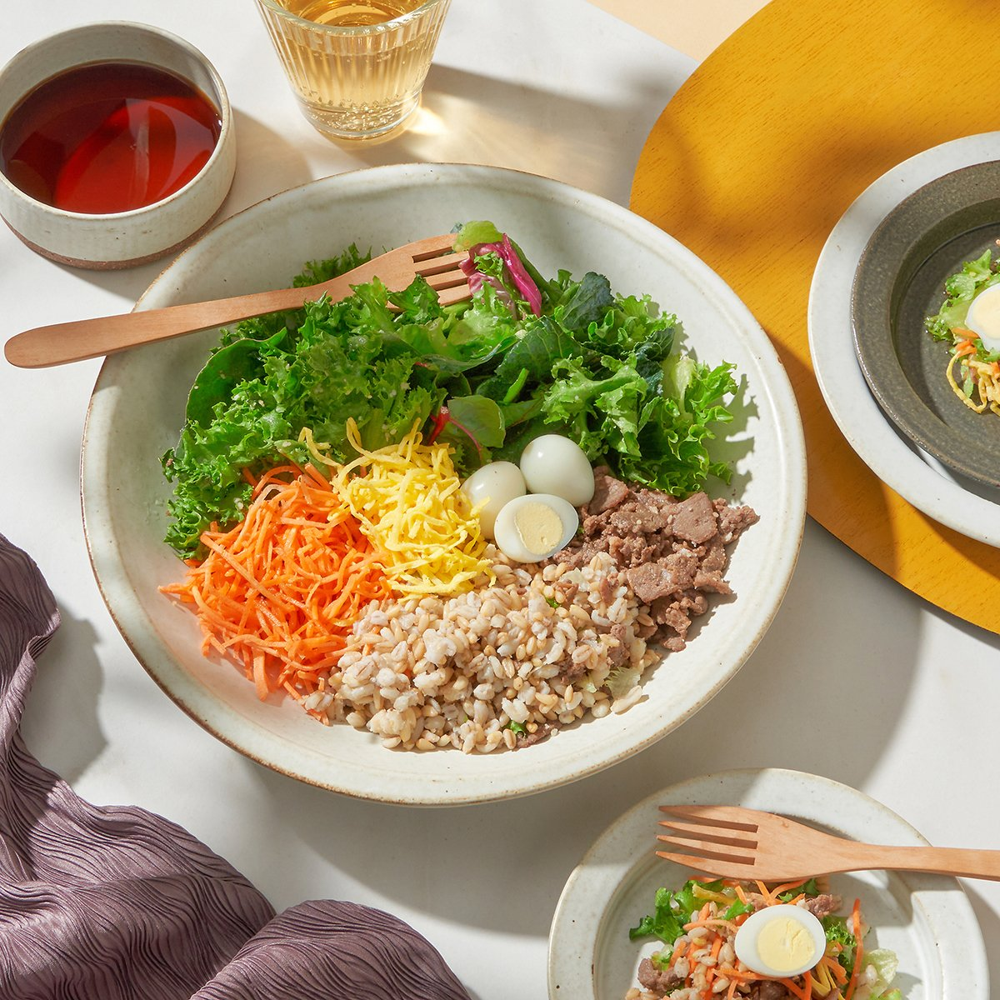

 Oriental Salad 채식주의자 런던에서의 5주 코스 5주간 채식주의자 음식에 대해 소개하고 쌀과 국수 요리를 가르친다. Soy Sauce 소스 마스터 클래스 1일 워크샵 1일 집중 코스에서는 다양한 요리에서 사용할 수 있는 가장 맛있는 소스를 만드는 방법을 살펴본다. 인기요리법 후라이드 고추바사삭 양념치킨 강정 연락처 경기 수원시 팔달구 매산동